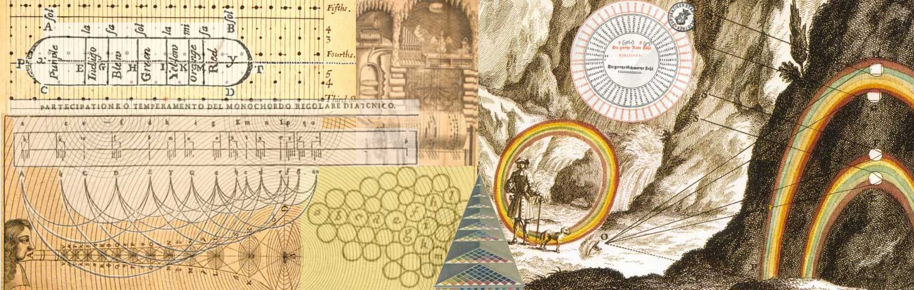

Research and list of relevant papers (german).
Keywords: perception, concepts, metaphors, topology, diagrams, pitch, timbre, colour, comparative analysis, networks, data modelling, content management, audio-visual applications
By investigating the conceptual field of sound, tone, pitch, and timbre in its relation
to visual phenomena and geometrical concepts, the project Sound Colour Space -
A Virtual Museum contributes to an interdisciplinary field of research and aims to explore
its adequate modes of representation and communication.
Many scientists and philosophers from antiquity to modern times have studied the relationships
between sound, light and geometry. Many of their visualisations of acoustical, optical and
perceptual topics speak to the eye and can be studied comparatively. These pictures are
interesting because of their diagrammatic structure, in the way they combine text, images
and spatial structures on a flat surface and in the way they address topological, philosophical
and psychological questions. They often have an aesthetic value of their own. The interdependencies
between sound and light, physics and perception seen through the spectacles of geometry,
i.e., by using mathematics as a kind of universal meta-language, is a topos of the history
of science and philosophy that can be traced back to Greek antiquity (Pythagoras, Aristoxenos,
Aristotle and Euclid) and figures in recent discourses in philosophy and aesthetics as well.
The collection and study of these materials and the attempts to present them as a sequential text
lead to the question of adequate forms of representation. Since a given picture or graphic can
appear in various contexts and with different implications, a distinct network architecture
permits forms of content representation free of redundancies in a way that is difficult to
achieve in textual form. Accordingly, we will analyse our collection of scientific illustrations
and diagrams (currently about 1000 image files) and present them together with related materials
and findings within an open, dynamical online publication. The metaphor «museum» is thus rendered
as a place where people and objects meet and interact in various dynamic modes. Visitors will gain
access to the collection of pictures and will be able to compare and regroup the pictures,
read explanations, listen to sound examples, watch animations and interact with audio-visual
applications, or just follow guided tours. Scientists and scholars will use the museum as a
research tool and add to the contents of the underlying database. The planned application
will be based on the Media Archive of the Arts developed at the ZHdK and will contribute
to the further development of this online platform as a research tool.
The structure of scientific knowledge in general and the topics of our project in particular
can be captured by relational models as used in computer science. Object-oriented and
relational data modelling offer means of interpreting «the world» in ways that exceed
classical sequential and hierarchical organisations of knowledge by highlighting
relational and dynamical aspects of objects and processes under consideration.
These ways of organising and representing knowledge had precursors in the early
seventeenth century. Robert Fludd’s Temple of Music (1618) is a kind of virtual museum.
Fludd uses the temple’s architecture as a metaphor for science where all topics related
to music have a place in space. In the treatise’s main section, the different parts of
the temple are fully developed and «curated» – sometimes by adding extra pictures,
sometimes by using «tree sentences» and sometimes in ordinary Latin language.
This creates a network of science (see Fig. 1, 2).
